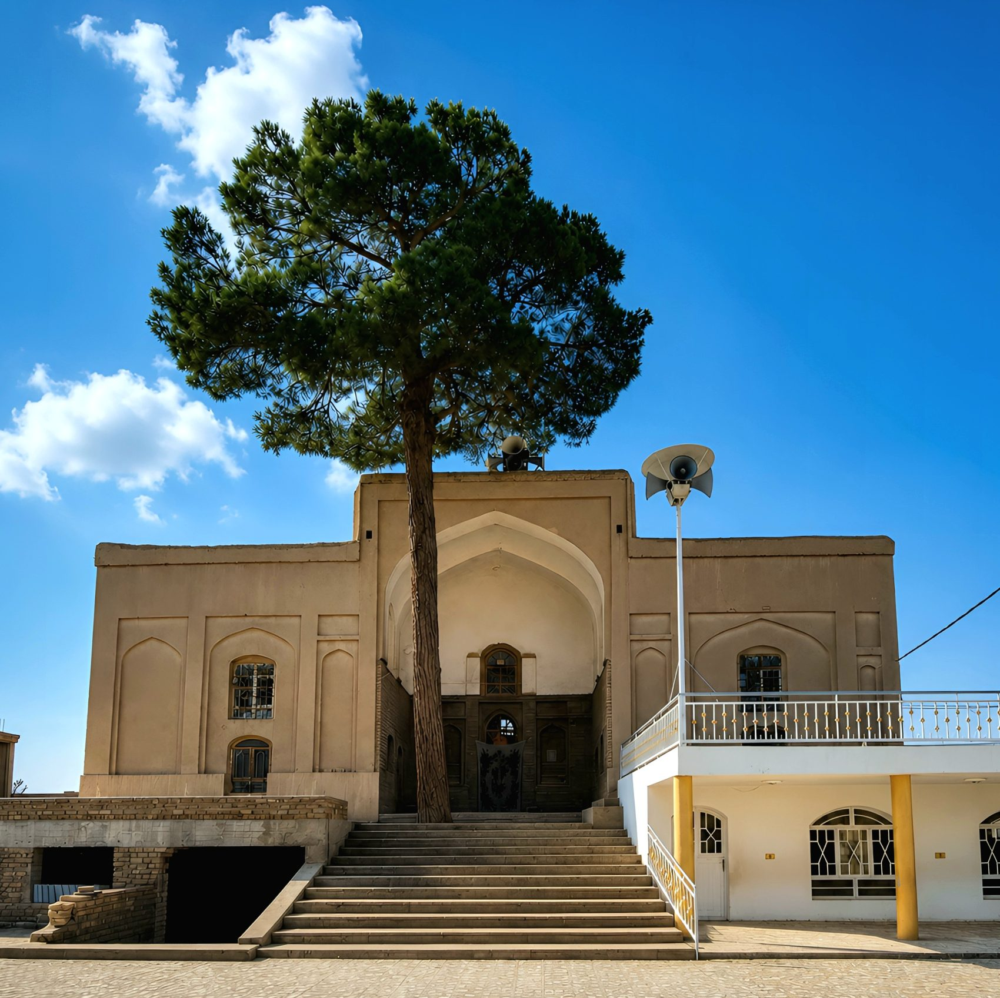
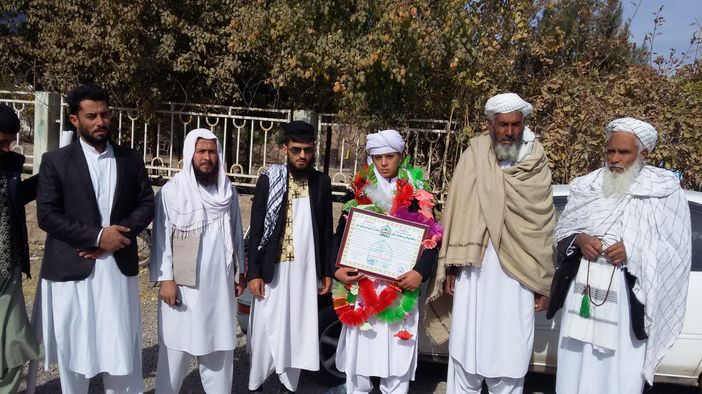
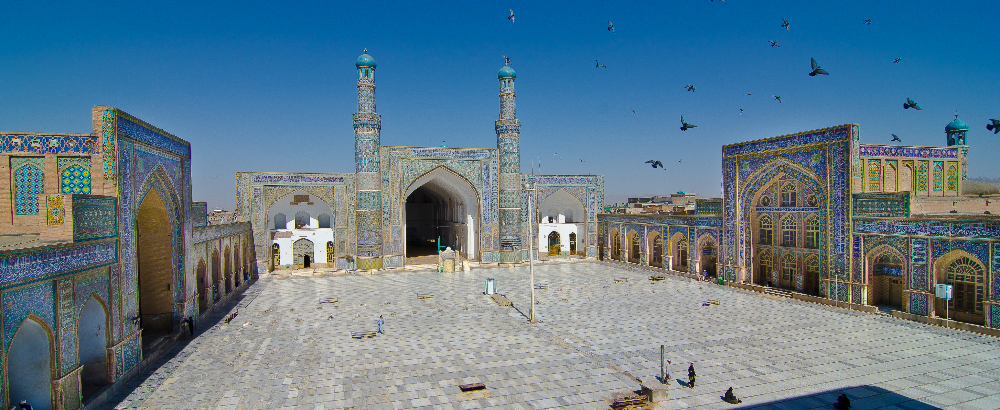
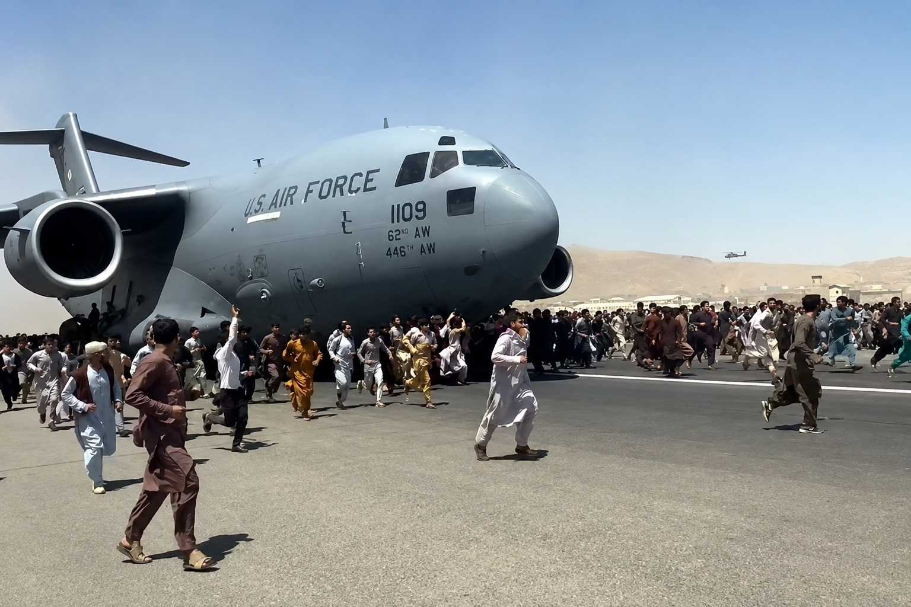
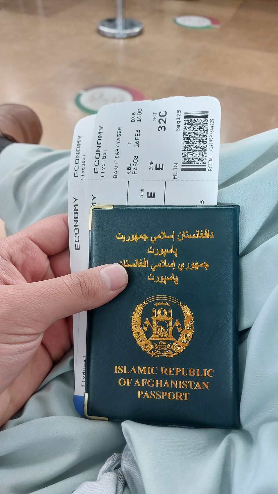
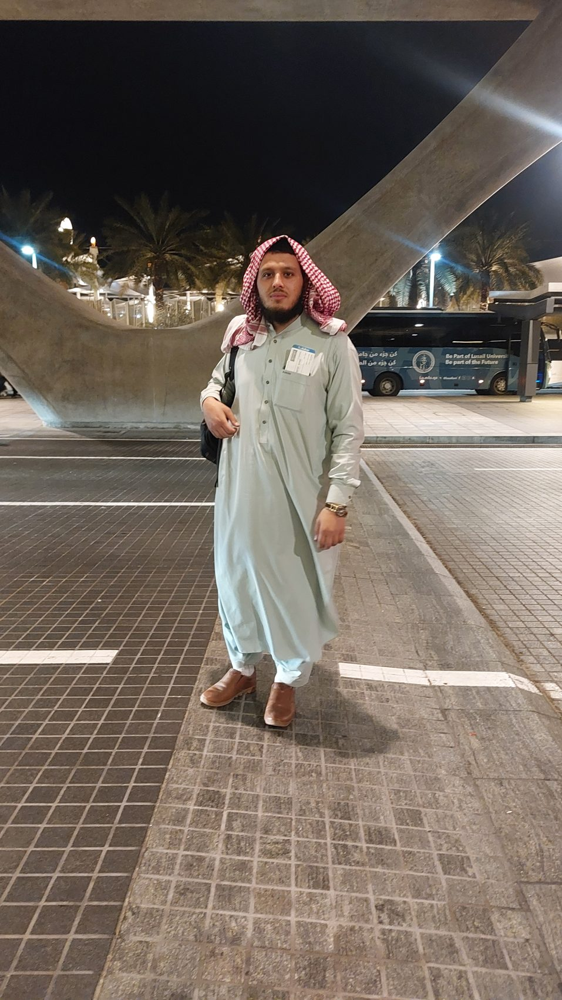

بسم الله الرحمن الرحيم، الحمد لله الذي خلق الإنسان، وعلّمه البيان، وفضّله بالعلم على سائر الأكوان. والصلاة والسلام على سيدنا محمد، الذي قال: "من سلك طريقاً يلتمس فيه علماً سهّل الله له به طريقاً إلى الجنة".
أما بعد،
إنّ سيرتي الذاتيّة هي حكاية طفل وُلِدَ في إحدى القرى النائية بأفغانستان، في أحضان أسرة متديّنة، حيث تجذّر الإيمان في نفوس أفرادها. فهذه ليست مجرد سيرة ذاتية، بل هي رحلة روح من قعر القرية إلى قمة الحضارة. قصة طفل عاش بين جدران الطين، وحمل في قلبه حلماً لا يموت، حتى كتب الله له أن يرى النور في أفق الدوحة الباسم. فهذه رحلةٌ لا تُروى بالكلمات وحدها، بل تختزل بين سطورها دمعة أمل، وصبر أيام، ودعاء ليل، ونجاحاً لم يكن ليحدث لولا لطف الله عز وجل.
جذور في التراب
قرية طينية في هرات، ودعاء أمٍّ، وحلمٌ يلامس السماء
في بيت الإيمان والعلم
في أحد الأقاليم الغربية من أفغانستان، حيث تترامى البيوت الطينية، وتتعرج الأزقة الترابية، وينبعث من المسجد القديم صوت الأذان يملأ الفضاء، هناك ولدتُ. كانت قريتنا تقع في إحدى الولايات الغربيّة لأفغانستان، حيث كانت الحياة تجري ببساطتها المعهودة؛ بيوت طينيّة، أزقّة ترابيّة، وصوت الأذان من مسجد القرية، وهي أوّل الصور التي ارتسمت في ذاكرة طفولتي.
كنتُ طفلاً لعائلة متدينة، تعيش على قوت يومها، لكن قلوبها كانت ممتلئة بحب الله، ونفوسها شغوفة بالعلم، وإن كانت الأيام لم تمنحها فرصة الاقتراب من مقاعد الدراسة.
كان والداي، رغم حرمانهما من فرصة التعلّم النظاميّ، يزرعان في قلوب أبنائهما حبّ العلم والمعرفة. لقد حرِم والداي من نعمة التعليم بسبب الحروب المتواصلة التي عصفت بأفغانستان، فلم يتعلّما سوى قراءة القرآن والحروف الفارسيّة في مسجد القرية. لكنّهما كانا يحملان في قلوبهما أملاً كبيراً: أن يبلغ أبناؤهما قمم العلم والمعرفة، ويحلّقوا في سماء الثقافة والوعي. كما كان يقول أبي دائما: "نحن لم نتعلم، فلتتعلموا أنتم، أنا لا أريد منكم العمل ولا أريد منكم المال، أنتم فقط ادرسوا جيدا، تعلموا ولتطيروا عالياً خارج قفص الجهل". وكانت أمّي، تلك المعلّمة الأولى والحنونة، تلعب دوراً محوريّاً في تشكيل شخصيّتي العلميّة، إذ كانت تعلّمني الحروف بكلّ صبر وحبّ، حتّى قبل التحاقي بالمدرسة.
أنتم فقط ادرسوا جيدا، تعلموا ولتطيروا عالياً خارج قفص الجهل
— والدي

وعد أمي.. بذرة تحولت إلى جبل لا يتزعزع
في يوم مشرق من أيام طفولتي، حين بدأت المدرسة وكنت في الصف الأول، بينما كنت أجلس مع أمي في صحن دارنا، نظرت إليّ بنظرة فيها من الحنان والأمل ما لا يوصف، وقالت بصوت ناعم كالنسيم: " يا بنيّ، إن اجتهدت في دروسك، وظللت أوّل طالب في صفّك في كل سنة، فستسافر إلى الخارج، وسترى بلداناً متقدمة، وستعيش في بلدان عربية، ستعيش في مملكة العربية السعودية وفي دولة قطر وفي دول عربية إسلامية، وسترتقي إلى أعلى الدرجات. سيسافرون بك مجاناً، وسيتكفلون بكل نفقاتك. سألتها بشوق الطفولة: "أهذه الرحلة مجانيّة يا أمّي؟" فأجابت بابتسامة: "نعم يا عزيزي، إذا كنت أوّل الطلاب من الصف الأوّل إلى الثاني عشر، ستسافر إلى الخارج وترى البلاد المتقدّمة، وتدرس فيها، وتحقّق أحلامك الكبيرة. كانت كلماتها كالنقش على حجر، بل كالنقش على الروح. منذ تلك اللحظة، غدوتُ أعيش على ذلك الوعد، كأنه نجمٌ يضيء لي الطريق، وكل صباحٍ كنتُ أنهض وأنا أردد في نفسي: "سأكون الأول، وسأحقق حلم أمي، وسأطير".
سأكون الأول، وسأحقق حلم أمي، وسأطير
— عهد الطفولة
حلم الطفولة.. رؤية الطائرة من قريب
كانت حياتنا في تلك القرية النائية بدائيّة وبسيطة جداً، خالية من الكهرباء والهاتف والإنترنت، لكنّ شيئاً واحداً كان يثير حماسنا نحن الأطفال: مرور الطائرات في سماء قريتنا. فكلّما سمعنا صوت المحرّك، نهرع جميعاً إلى الفضاء المفتوح، نرفع رؤوسنا إلى السماء، نراقب تلك النقطة الفضّيّة الصغيرة حتّى تختفي في الأفق. كنت أتساءل في طفولتي: كم هي كبيرة هذه الطائرة عن قرب؟ وكيف يشعر من يجلسون داخلها وهم يرون الأرض من فوق؟ هل سيكون لي يومٌ ما أن أركبها وأسافر إلى بلاد أخرى؟ كانت تلك التساؤلات تتردد في فؤادي كلما مرت طائرة، وكأنها رسائل من المستقبل، لم يكن يخطر ببالي أنّ ذلك اليوم سيكون قريباً، وأنّني سأجلس في تلك الطائرات التي كنت أتأمّلها من بعيد، وأسافر نحو آفاق جديدة.
المدرسة واكتشاف اللغة العربية
للغة العربيّة في أفغانستان مكانةٌ لا تضاهيها مكانة؛ فهي ليست مجرّد لغةٍ ثانية، بل هي مفتاحُ الدّين، وعروةُ الإيمان، ووسيلةُ فهم كتاب الله وسنّة نبيّه. لذلك، تجد الآباء والأمّهات في القرى والمدن على حدّ سواء، يهرعون بأطفالهم منذ نعومة أظفارهم إلى المساجد والكتاتيب، لا ليتعلّموا القراءة فقط، بل لينشأوا على حبّ الحروف العربيّة، ويستوعبوا نغماتها التي تتلى بها آيات الذكر الحكيم.
لم أكن استثناءً في هذه القاعدة الأصيلة؛ فقبل أن تطأ قدماي باب المدرسة الحكوميّة، كنت أجلس بين يدي الشيخ في مسجد قريتنا، أتلقّن حروف الهجاء، وأحفظ قصار السور. كانت تلك هي البذرة الأولى في تعلّم العربية، حيث غُرست في فطرتي قبل أن تنتظم في منهج دراسيّ. ومع مرور الأيّام، تفتّح ذهني على أسرار الجملة العربيّة، وأصبحت أتمتّع بصوت التلاوة أكثر من أيّ طفلٍ آخر، حتّى باتت العربية بالنسبة لي ليست أداةً دينيّةً فحسب، بل رفيقةً يوميّةً أستأنس بها.
وفي سنوات المدرسة الرسميّة، لم أقتصر على ما تلقّيته في المسجد، بل واصلت دراسة قواعد العربيّة وتحليل النصوص في مناهجنا الدراسيّة، فتعمّق حبّي للغة القرآن وازداد شغفي بفقهها وبلاغتها.
لكنّ والديّ، رغم تشبّعهما بالروح الدينيّة والاهتمام بالعربيّة، كانا يدركان تمام الإدراك أنّ العالم قد تغيّر، وأنّ العلم الحديث لا يمكن الإحاطة به إلاّ بتعلّم لغات العصر. ففي قريتنا البعيدة، كان هناك أستاذ يصل من مدينة هرات لتدريس مادة اللغة الإنكليزيّة في المدرسة. وما إن علم والدي بذلك حتّى بادر بطلب خاصّ، بأن يعقد ذلك الأستاذ دروساً خصوصيّة لي ولأخي، بعيداً عن عناء الفصول الدراسيّة المكتظة.
كانت تلك الدروس الخاصّة أشبه بفتح نافذةٍ جديدة في جدار حياتي الضيّق. فإلى جانب النافذة الشرعيّة التي فتحها القرآن الكريم بعربيّته البليغة، فتحت لي الإنكليزيّة آفاقاً رحبةً على العالم المعاصر. وأدهشني أنّ الأستاذ نفسه، الذي كان يُعلّمني إنكليزيّته، كان معجباً بمدى التزامي واستعدادي الفطريّ للغات، فكان يشجّعني قائلاً: "إن حفظت العربيّة بقلبك، وتعلّمت الإنكليزيّة بعقلك، فأنت رجلٌ له مستقبلان معاً".
إن حفظت العربيّة بقلبك، وتعلّمت الإنكليزيّة بعقلك، فأنت رجلٌ له مستقبلان معاً
— أستاذ اللغة الإنكليزية
لم تكن هذه الدروس مجرّد تمرين على المفردات، بل كانت بوّابتي الأولى لفهم التكنولوجيا والمنح الدراسيّة لاحقاً، وهي التي مكّنتني بعد سنين من اجتياز المقابلات الدوليّة بكلّ ثقة. فما تعلمته في المسجد من عربيّة، وما اكتسبته من إنكليزيّة، صارا ركيزتين أساسيّتين في بنيان شخصيّتي العلميّة، اللتين حملتهما معي حين غادرت قريتي الصغيرة إلى رحابة الدنيا. ودرست في قريتي حتّى الصف الخامس، لكن ثمّة حدثاً غيّر مسار حياتي إلى الأبد.
ثورة في طريق العلم؛ حفظ القرآن الكريم
في عام 2013، حلّ شهر رمضان المبارك، حاملاً معه تحوّلاً كبيراً لقريتنا. جاء إلى قريتنا رجلٌ حافظٌ للقرآن، بصوتٍ جميل، ليؤمّ المصلّين في صلاة التراويح. كان تلاوته تترك أثراً عميقاً في النفوس، ويمتلئ المسجد كلّ ليلة بالمصلّين. ومع نهاية الشهر بعد مشاورات كثيرة، طلب كبار القرية منه أن يبقى في القرية وينشئ داراً لتحفيظ القرآن، فوافق الرجل بكرمه وتواضعه، وكانت فرحة القرية لا توصف. حينها قال لي والدي كلمة بقيت محفورة في ضميري: "يا بني، إن أردت الفلاح في الدنيا والآخرة، فاحفظ كتاب الله، فهو كنز لا يفنى، وهو خير زاد في السفر والحضر".فتركت المدرسة، ودخلت دار التحفيظ بشوق، وقضيت أيامي ولياليّ في ترديد الآيات ومراجعتها. صرت أعيش مع الآيات، أنام معها وأصحو معها، أرددها في طريقي إلى المسجد وفي عودتي. استمر هذا الحال سنتين كاملتين، حتى منّ الله عليّ بحفظ القرآن كاملاً في تلك المدة. أتممت حفظ القرآن الكريم في سنتين، كانتا من أعذب أيام حياتي وأكثرها بركة، وشكّلتا الأساس الراسخ لشخصيّتي العلميّة والروحيّة، إذ منحتاني الصبر والنظام والمثابرة والثقة بالنفس.
فاحفظ كتاب الله، فهو كنز لا يفنى، وهو خير زاد في السفر والحضر
— والدي

لؤلؤة خراسان
هرات، ومحراب العلم، وأولى خطوات التقنية
من القرية النائية إلى مركز المدينة
بعد إتمام حفظ القرآن، أيقنّا أن الرحيل عن القرية لم يعد خياراً، بل ضرورةً حتميةً لمستقبلٍ لم يكن ليتحقّق في تلك البقعة النائية. كان الخيار الأوحد أمامنا هو مدينة هرات، تلك الجوهرة التاريخية التي تتربّع في غرب أفغانستان، والتي عُرفت عبر العصور بـ "لؤلؤة خراسان" و"نِجين خراسان". لم تكن هرات مجرّد وجهةٍ للهجرة، بل كانت قبلةً للعلم والعلماء على مرّ التاريخ.
ففي العصر التيموري، كانت هرات عاصمةً للعلم والثقافة، واستقطبت ألمع العقول في شتى المجالات. لقد أنجبت هذه المدينة العريقة وأطْرت بأبنائها عبر القرون. فعلى أرضها تربّى ونبغ أبو الفضل المنذري، الأديب والفيلسوف الكبير. وفيها خلّدت ذكر علي شير نوائي، ذلك الأديب والمفكّر الذي تجاوزت شهرته حدود الزمان والمكان. وحتى في العصر الحديث، ظلّت هرات منبعاً للعلماء والمفكّرين الذين حملوا راية العلم والمعرفة.
عندما دخلتُ هرات، لم تكن مجرّد مدينةٍ جديدةٍ في حياتي، بل كانت امتداداً لتاريخي وثقافتي، ومصدر إلهامٍ لا ينضب. كانت شوارعها وأسواقها القديمة تهمس بحكايات الماضي، وكانت جدران قلعتها العتيقة (قلعة هرات) تشهد على عظمة الحضارات التي تعاقبت عليها. شعرتُ وكأنّني أسير على خطى أولئك العلماء والأدباء الذين جعلوا من هرات منارةً للعلم.
كان الانتقال إلى هرات نقلةً نوعيةً في مسيرتي؛ ففيها، وللمرة الأولى، شعرتُ بأنّني أصبحت جزءاً من سلسلةٍ متصلةٍ من طلّاب العلم التي لم تنقطع منذ قرون. كنتُ أتمشى في أزقّتها، وأنا استشعر عبق التاريخ، وأتطلّع إلى مستقبلٍ يعيد إحياء هذا الإرث العظيم الذي حملته هرات على مرّ العصور، والتي ما زالت حتى اليوم، رغم كلّ الصعاب، "قلب أفغانستان النابض بالعلم والثقافة".
وبعدَ سنةٍ من الاستقرارِ في المدينةِ، التحقتُ بمدرسةٍ دينيةٍ عريقةٍ، كانت منارةً من مناراتِ العلومِ الإسلاميةِ في تلكَ المنطقةِ، وهناكَ شرعتُ في دراسةِ "مسار الأدبي" (العلوم الشرعية) من الصفِّ السادسِ وحتى الثاني عشرَ.
كانت المناهجُ الدراسيةُ هناك بحراً زاخراً بالعلومِ المتنوعةِ؛ فدرستُ علمَ الصرف، وعلمَ النحو، وعلمَ البلاغة، وأصولَ الفقه، والتفسير، والحديث، والعقيدة. كانتْ كلُّ مادةٍ تفتحُ لي نافذةً جديدةً على عوالمَ معرفيةٍ رحبةٍ، وتغرسُ في روحي عمقاً علمياً وفهماً دقيقاً لدينِ اللهِ.

اكتشاف نظام المنح.. حلم يتحقق
في أثناء وجودي في المدرسة الدينية، حدث لقاء غير مساري تماماً. تعرفت على شخص قادم من السعودية للدراسة، فذهبت إليه بشوق كبير، وأمطرته بالأسئلة: كيف سافرت؟ وهل الدراسة مدفوعة الثمن أم مجانية؟ وهل دفعت شيئاً ؟
أجابني بكل طيبة وصبر، وشرح لي نظام المنح بالتفصيل: "هناك نظام اسمه المنح الدراسية. الجامعات تعلن عنها في مواقعها، ويتقدم الطلاب من كل مكان، وتختار الأكفأ منهم. الجامعة تتحمل كل شيء: تذاكر الطيران، الرسوم الدراسية، السكن، والمعيشة، ولا يدفع الطالب ريالا واحدا. أنا شخصيا جئت بهذه الطريقة".
كلامه كان مثل الماء البارد على قلب ظمآن. شعرت أن الحلم أصبح حقيقة قابلة للتحقيق، وأن الطريق الذي ظننته مستحيلاً أصبح ممهداً. منذ تلك اللحظة، وضعت خطة محكمة، وعزمت على أن أكون أحد هؤلاء المختارين.
التخرج والحلم الكبير
في ديسمبر 2022، وبعد سنوات من الكفاح العلميّ، تخرجت من المرحلة الثانوية. ونلت شهادةً بمعدل 99.12%. كان يومًا حافلاً بالمشاعر المتناقضة: فرحة النجاح، وشوق لا يوصف لبدء مرحلة جديدة. كان حلمي الدائم، منذ طفولتي، هو مواصلة الدراسة في الخارج، في إحدى الجامعات العربية المرموقة. لم يخفت هذا الطموح يومًا، وظلّ عقلي مشغولاً بفكرة تجاوز حدود الوطن، سعياً للتقدّم وخدمة بلدي. كنت أعرف أنّ أفغانستان بحاجة إلى أبنائها المتعلمين والمخلصين لتجاوز محنها. وبعد التخرج، بدأت في تجهيز ملفّي للتسجيل في المنح الدراسيّة، عالمًا بأنّها السبيل الوحيد لتحقيق حلمي.
شغف التقنية.. موهبة فطرية
إلى جانب حبي للعلوم الدينية، كانت لي عينٌ أخرى تتجه إلى عالم التقنية. أتذكر أن والدي كان يملك هاتفاً بسيطاً من نوع نوكيا، وكنتُ أجرب بنفسي، وأكتشف القوائم، وأحل المشكلات، ثم أعلمه كيف يفعل. كبرت هذه الموهبة معي، حتى عندما ظهرت الهواتف الذكية، كنتُ أفهمها بسرعة فائقة، رغم أن أحداً لم يعلمني شيئاً.
كانت هذه الهبة الربانية كالصدفة التي تخفي درة، لم تظهر قيمتها إلا حين أصبحت في المدينة وواجهت العالم الرقمي، فكانت لي القدرة على تجاوز عقبات كثيرة في طريقي. ولم تكن هذه مجرد مهارة عابرة، بل كانت دعماً خفياً ساعدني كثيراً في حياتي لاحقاً.
الحياة في المدينة وانطلاق المهارات الحاسوبية
بعد الهجرة إلى هرات انفتح أمامي عالم جديد. اشتريت هاتفًا ذكيّاً، وكانت هذه أوّل تجربة لي مع الإنترنت، التي فتحت لي آفاقًا واسعة من المعرفة. ساعدت الناس في المدينة في إنشاء بريد إلكتروني، واستخدام الإنترنت للمكالمات الدوليّة.
كان والدي يبيع البطانيات، وفي يوم من الأيام، جاء رجل من إيران إلى دكان والدي، ليبيع حاسوباً محمولاً جديداً، وكان والدي حريصاً على مستقبلنا، فاشتراه منه مقابل عدة بطانيات من عنده.
في الليل عدت إلى البيت، ورأيت الحاسوب وفتحت العلبة بشوق، وبدأت أكتشف هذا الجهاز العجيب. وكان ذلك أول حاسوب أراه عن قرب ولكن كنت أتعامل معه كأني أعرفه منذ زمن، وكنت أصلح مشاكله، وأنصب البرامج، وأصبحت الملجأ الأول لكل من وقع في حيرة من أمره في الحي. كانت تلك التجارب هي المدرسة العملية التي صقلت موهبتي وجعلتني خبيراً في مجال المعلوماتية بين أقراني، رغم صغر سنّي، واكتسبت خبرة كبيرة ساعدتني لاحقاً في التسجيل للمنح والأنشطة الإلكترونيّة.
قناة تلغرام.. جسر العون للآخرين
بعدما تأكدتُ بشكلٍ قاطعٍ من وجودِ المنحِ الدراسيةِ الحقيقيةِ، وبدأتُ أخططُ لأوراقي، صدمتُ بواقعٍ مريرٍ: وجود وسطاء وشركات تتقاضى مبالغ خيالية (مئاتُ الدولارات) مقابل مجرد تعبئة طلب التقديم الإلكتروني. هذا الأمرُ أشعرني بالغضبِ، لأنني كنتُ أعرفُ أن معظمَ الطلابِ الأفغانِ، مثلي تماماً، لا يملكونَ هذه المبالغَ. فأنا نفسي لم أملكُ ريالا لأدفعهُ، واضطررتُ إلى تعلمِ كلِ شيءٍ بنفسي، وبعدَ أنْ أتقنتُ العمليةَ، وجدتُها في غايةِ البساطةِ.
هنا ولدتْ فكرةُ إنشاءِ قناةٍ على تطبيق تلغرام، تكونُ منارةً مجانيةً للطلابِ. هدفي كان واضحاً: أن أساعدَ زملائي الطلابِ الذينَ لديهم المؤهلاتُ لكنهم يفتقرونَ إلى المعلومةِ أو المالِ. كنتُ أنشرُ فيها كل منحة جديدة، وأشرحُ طريقة التقديم، وأجيبُ عن استفساراتِهم، بل وكنتُ أتولى بنفسي تعبئة طلبات البعض مجاناً، أو بأقل تكلفة رمزية تغطي مشقة العمل.
وكانتِ النتيجةُ مذهلةً؛ فقد وفقَ اللهُ عدداً من الطلابِ الأفغانِ للحصولِ على منحٍ دراسيةٍ، وسافروا إلى الخارجِ بفضلِ هذه الجهودِ المتواضعةِ. كنتُ أشعرُ بسعادةٍ غامرةٍ كلما علمتُ بنجاحِ أحدهم، وكأنه نجاحي أنا شخصياً، لأنني كنتُ أغلق فجوة معرفية كبيرةً في مجتمعي، وأحاربُ الجشعَ والاستغلالَ بالقليلِ من العلمِ والكثيرِ من الإخلاصِ.
سنوات الانتظار
حين تتأخر الأبواب ويبقى الأمل
التحولات السياسية وتداعياتها على المسار الأكاديمي
شكّلت التحوّلات السياسية في أفغانستان منعطفًا حاسمًا في مسيرتي، كما في حياة ملايين الأفغان. ففي 15 أغسطس 2021، دخلت قوات طالبان العاصمة كابل، بعد هجوم عسكري واسع بدأ في مايو من العام نفسه، تزامنًا مع انسحاب القوات الأمريكية المقرّر إكماله بحلول نهاية أغسطس. وكان المشهد الأكثر دراماتيكية في المطار الدولي، حيث تحوّل إلى قاعدة عسكرية مؤقتة للإجلاء، وتوقفت جميع الرحلات التجارية، وتعطّلت أنظمة الملاحة والرادارات. وعلى صعيد المؤسسات الحكومية، أغلقت الوزارات والدوائر الرسمية أبوابها لأسابيع، وتجمّدت الخدمات العامة، بما في ذلك إصدار جوازات السفر وتوثيق الشهادات، بسبب هروب أو غياب الموظفين. وبسبب هذا الجمودُ الإداريُّ، بالإضافةِ إلى الزحامِ الهائلِ على مكاتب الجوازات، لم أتمكنْ من الحصول على جواز سفري إلا في عام 2024، بعد انتظارٍ دامَ عامين كاملين، وشهادتي الثانوية لم تأت إلا في مارس من نفسِ العامِ. كانتْ سنواتُ انتظارٍ قاسية، جربتْ صبري، لكن إيماني باللهِ ويقيني بأن كلَّ تأخيرٍ فيه خيرٌ، كانا هما الوقودَ الذي حماني من الانهيارِ.
والخسارة الأعظم التي واجهت أفغانستان كانت في قطاع التعليم. إذ أصبحت المدارس فارغةً من المعلمين المؤهلين، وتوقف بعض الجامعات عن العمل لفترات طويلة لغياب الكوادر التدريسية المتخصصة. لم يعد هناك نظام دراسي واضح، ولا مناهج محدّثة، ولا آليات تقييم موثوقة. اختفى الإطار الأكاديمي المنظم، واستُبدل بالفراغ المعرفي، حيث بات الطلاب في المدن والقرى يتلقّون دروسًا متقطّعة على أيدي أساتذة لا يملكون المؤهلات اللازمة.
الأكثر إيلامًا أن هذا الانهيار لم يمسّ البنية التحتية فحسب، بل أصاب روح العلم في المجتمع الأفغاني؛ إذ تحوّلت الجامعات من منارات علم إلى مباني صامتة، وغادر الكفاءات العلمية البلاد، حاملين معهم عقودًا من الخبرات المتراكمة، تاركين وراءهم جيلاً كاملاً من الشباب بلا معلمين، وبلا منهج، وبلا أملٍ في مستقبل أكاديمي.
ووسط هذه الفوضى، برز دور قطر الحبيبة كوسيط فاعل وجسر تواصل بين الأطراف المختلفة، حيث استضافت الدوحة منذ عام 2013 المكتب السياسي لطالبان، وكانت راعية للمفاوضات التي أسفرت عن اتفاق الدوحة 2020. وبعد السيطرة على كابل، واصلت الدوحة دورها في تسهيل الحوار الدولي وإعادة تشغيل مطار كابل بالتنسيق مع أطراف محايدة. غير أن الأثر الأعمق بالنسبة لي كان في المجال التعليمي، حيث كانت الجامعات القطرية، وفي مقدمتها جامعة لوسيل، باباً مفتوحاً أمام طلاب فقدوا بلدهم نظامه التعليمي، ليمنحوهم فرصة إعادة بناء مستقبلهم الأكاديمي من الصفر.
هكذا، تحوّلت قطر من وسيط دبلوماسي إلى شريك في استعادة الأمل، ومن دولة جارة إلى وجهةٍ علميةٍ تعوّض ما فُقد في وطنٍ غاص في أزمة التعليم.

اغتنامُ وقتِ الانتظارِ في تحصيلِ العلمِ الشرعيِّ المتقدمِ
ولم يضعِ اللهُ جهدي سدىً؛ ففي تلك السنتين الطويلتين من الانتظارِ، لم أتوقفْ عن التعلمِ لحظةً واحدةً. إلى جانبِ المرحلةِ الثانويةِ التي أنهيتها بنجاح، واصلتُ دراستي للعلومِ الشرعيةِ المتخصصةِ على يدِ كبارِ علماءِ هرات. أتقنتُ فنونَ اللغةِ العربيةِ من صرفٍ ونحوٍ وبلاغةٍ، ودرستُ المنطقَ وأصولَ الفقهِ والقواعدَ الفقهيةَ، وقرأتُ التفاسيرَ الموسعةَ، ودرستُ كتبَ الحديثِ النبويِّ الشريفِ.
في عام 2022، بدأتُ مرحلةً نوعيةً جديدةً وهي دراسةُ "دورةِ الأحاديثِ النبويةِ المتخصصةِ"، وهي دورةٌ رفيعةُ المستوى، تتعمقُ في شرحِ أحاديثِ الرسولِ صلى اللهُ عليهِ وسلمَ، وتحليلِ أسانيدها ومتونها، وذلك بالاعتمادِ على أمهاتِ كتبِ الحديثِ. كانت هذهِ الدورةُ معراجاً علمياً حقيقياً، زادتْ من عمقِ فهمي، ورفعتْ قدرتي على التحليلِ والاستنباطِ، وجعلتني مستعداً لأيِّ اختبارٍ أكاديميٍّ، أو مقابلةٍ مع أيِّ هيئةٍ علميةٍ في المستقبلِ.
التقدمُ لمنحِ تركيا.. تفوقٌ واحباطٌ سياسيٌّ
ما إنْ حصلتُ على جوازِ سفري وشهادتي، حتى أسرعتُ بالتسجيلِ في المنح، وفي هذا الوقت كانت منحةُ الحكومةِ التركيةِ مفتوحة. كانت المنحة التركية تنافسية للغايةِ، لكنني كنتُ واثقاً من نفسي ومن أوراقي القويةِ؛ فقد حصلتُ على نسبةِ 99.12% في الثانويةِ، وكنتُ حافظاً لكتاب الله، ومتقناً عدة لغات: الفارسية والعربية وشيئا من الإنجليزية. هذهِ المقوماتُ جعلتني مرشحاً قوياً جداً، وهذا ما تأكد عندما وصلتني دعوةٌ لإجراءِ مقابلةٍ شخصيةٍ مع وفدٍ تركيٍّ، وكانتِ المقابلةُ رائعةً، وأجبتُ فيها بالعربيةِ الفصحى بطلاقةٍ، وأظهرتُ كفاءتي العاليةَ.
ومع ذلك، وبعدَ مرورِ ثلاثةِ أشهرٍ من الانتظارِ العصيبِ، جاءني الردُ بالرفضِ. كانت الصدمةُ قاسيةً، لكنني عرفت السببَ لاحقاً؛ فقد كانتِ السياسة التركية في ذلك العام قد منحتْ الأولوية للطالباتِ الأفغانيات، تضامنا معهن في ظلِّ حرمانِهنَّ من التعليمِ في أفغانستان الجديدة. لذلك، كادتْ جميعُ المقاعد المخصصة للأفغان أن تذهبَ للإناث، وكان حظُّ الذكور شبه معدوم، حتى لو كانوا متفوقين مثل حالتي. كانت خيبةُ أمل كبيرة، لكنها لم تثنِ عزيمتي، وعلمتني أن النجاحَ يحتاجُ إلى صبرٍ أكبرَ وتوكلٍ أعمقَ، فما هي إلا محطةٌ في طريقِ الألفِ ميلٍ.
حملةٌ سعوديةٌ موسعةٌ.. وآمالٌ تتبخرُ في بحرِ الزحامِ
لم أيأسْ من فشلي في تركيا، بل حولتُ وجهتي نحو المملكة العربيةِ السعودية، أرض الحرمين، التي كنتُ أتوقُ دوماً للدراسة فيها، بسبب عمق علاقتي باللغة العربية وارتباطي الوثيق بتراثِها الإسلاميِّ. في عام 2024، أعلنتْ السعوديةُ عن العديدِ من المنحِ؛ منحة وزارة التعليم العالي، ومنحةُ جامعة الملك سعود، ومنحةُ جامعة الملك سلمان (المعهد العالي للغة العربية). تقدمتُ بكلِّ نشاطٍ، وسجلتُ في أكثر من عشرينَ منحةً مختلفةٍ، كنتُ أملأُ الاستمارات بدقةٍ، وأرفعُ الوثائقَ باهتمام، وأراقبُ بريدي الإلكتروني بلهفة.
لكن، وللمرة الثانية، جاءت النتيجةُ صادمة؛ فقد تمَّ إلغاءُ طلبات معظم الطلاب، بما فيهم أنا، دونَ أيِّ تقييمٍ حقيقيٍّ. لم تكنْ رفضا مشروحا، بل كانت الملفاتُ تُلغى تلقائياً بواسطة الأنظمة الذكية، بسبب العدد الهائل من المتقدمين حول العالم، وعدم معالجة الطلبات من قبل الجامعات في وقت محدد. شعرتُ بمرارة عميقة، وبدأتُ أشكُّ في جدوى هذه المنح كلها، وتساءلتُ في قرارة نفسي: "هل هذه كلها سرابٌ؟". لكن شعاعاً صغيراً من الأمل ظلَّ يتوهجُ في داخلي، يهمسُ لي بأن الله يدخرُ لي الأفضل، وأن ثمة ضوءا ينيرُ ظلمة هذا الطريق الطويل.
فجر الدوحة
من رسالة قبول إلى طائرة تحمل الحلم
بزوغُ فجر الدوحة.. لقاءٌ مع جامعة لوسيل
في خضمِّ بحثي اليوميِّ المتواصلِ، صادفتُ قناة عربية تنشرُ خبرا عن فتح باب التقديم لمنح جامعة لوسيل في دولة قطر. فسارعتُ إلى البحث عن الجامعة وتفاصيل المنحة. اكتشفتُ أنها جامعةٌ حديثةٌ وعصريةٌ، توفرُ بيئةً أكاديميةً متطورةً، ومنحةً كاملةً تشملُ كلَّ شيءٍ، ولكنْ بشروطٍ صارمةٍ؛ أولها أن تكونَ المدرسةُ المتخرجُ منها الطالبُ معتمدةً لدى وزارةِ التعليمِ القطريةِ، وهو شرطٌ أثارَ قلقي، وثانيها أن تكونَ درجاتُ الطالبِ ممتازةً باستمرارٍ.
هممتُ بالانسحابِ قبلَ البدءِ، لولا أنِّي تذكرتُ أن مع كل عسر يسراً. دخلتُ موقعَ الجامعةِ وبدأتُ أملأُ الاستمارةَ، ولكن فوجئتُ بطلبِ دفعِ 100 ريالٍ قطريٍّ كرسومِ تقديمٍ. كانت كارثةً، لأن أفغانستانَ خارجةٌ عن النظامِ المصرفيِّ الدوليِّ، ولا أملكُ أيَّ وسيلةٍ للدفعِ. كدتُ أنسحبُ وأنا محبطٌ، لكن في اليومِ التالي، كتبتِ القناةُ أن بإمكاني إكمالُ التسجيلِ وتأجيلُ الدفعِ لاحقاً. عدتُ للاستمارةِ، وأكملتُها بحذرٍ، وعندما وصلتُ لاختيارِ التخصصِ، صدمتْ مجدداً؛ فلم يكنْ "العلومُ الإسلاميةُ" ضمنَ الخياراتِ. اخترتُ أقربَ تخصصٍ وهو "القانون"، وتوكلتُ على اللهِ، ورفعتُ يدي بالدعاءِ أن يكتبَ اللهُ الخيرَ في هذهِ الخطوةِ، رغمَ شعوري بأن قطرَ حلمٌ بعيدٌ لا يُدركُ، وأن مثلي لا يصلُ إلى مثلِ هذهِ الدولةِ الثريةِ والمتقدمةِ.
موعدُ القدر.. مقابلةٌ مع لجنة لوسيل بعد انتظار طويل
مضتْ شهورُ ثلاثةٌ على تقديمي، وكنتُ كلَّ يومٍ أتفقدُ بريدي، حتى جاءني يوما بريد يعلن أنني مرشحٌ لإجراءِ مقابلةٍ عبرَ الإنترنتِ في اليومِ التالي الساعةُ 11:45 صباحاً. استعديتُ جيداً رغمَ ضعفِ اتصال الإنترنت لدينا وقدم جهاز الحاسوب. دخلتُ رابطَ الاجتماع الإلكترونيَّ، وانتظرتُ بصبرٍ، ومرتْ 20 دقيقةً دون أيِّ ردٍّ من الطرف الآخرِ. غمرني الإحباطُ وخرجتُ من الاجتماعِ وأنا أظنُّ أن هذه فرصةٌ ضائعةٌ أخرى تضافُ إلى سجلِّ خيباتي.
لكن في تلك الليلة نفسها، وقعت المفاجأةُ؛ إذ وصلني بريد آخر، ويحددُ موعداً جديداً للمقابلة في اليوم التالي الساعةُ 3:45 عصراً. كان الأمرُ معجزاً، فأنا لم أحصلْ على هذه الفرصة الثانية في أيِّ مكانٍ آخر. وفي اليوم التالي، عدلتُ من جلستي، وتوكلتُ على اللهِ، وانتظرتُ، وهذه المرة، وبعد 10 دقائق، ظهرتْ وجوهُ اللجنةِ على الشاشةِ. جرتِ المقابلةُ بسلاسة، وتحدثتُ معهم بالعربية، وسألوا أشياء فأجبت، وشرحتُ لهم رحلتي وتفوقي وحفظي للقرآنِ. غادرتُ المقابلةَ وأنا في حالة من السلام الداخلي، راضياً عن أدائي، ومؤمناً بأن ما سيحدثُ هو خيرٌ لي.
القبول المشروط.. وساعات الترقب الحاسمة
بعدَ شهرٍ ونصفٍ من المقابلةِ، وفي السادس عشر من يناير عام 2025، بينما كنتُ منهمكا في دراستي اليومية للحديث النبويِّ، تلقيتُ إيميلاً تاريخياً من جامعة لوسيل بعنوان "يسرنا إبلاغكم بأنه تم قبولكم – قبول مشروط". كان قلبي يكادُ يقفزُ من صدري فرحاً، لكن الرسالةَ طلبتْ مني تأكيد بعض التفاصيل اللوجستية، كاسم مطار المغادرة والعنوان الدقيق، وافترضتْ أنني سأكونُ في الدوحة بحلول نهاية يناير. كيف ذلك وأنا في هرات، وبينِي وبين كابل أكثر من 20 ساعةً بالحافلة؟!
قررتُ ألا أخبر أحداً لئلا يفرح قبل أوانه، سوى والديّ اللذين أطلعتُهما على الخبر بحذر. مرَّتْ أيامُ يناير وانقضتْ، ودخل فبراير، وتجاوزنا العاشر منه، ولم تصلْني أيُّ رسالةٍ جديدةٍ. ازدادَ قلقي، وبدأتُ أتشككُ في كلِّ شيءٍ، وظللتُ أترددُ على المدرسةِ وأنا مشغولُ البالِ، أتساءلُ: "هل سينجحُ هذا الحلمُ أخيراً، أم أنهُ سيتبددُ كسابقاتِهِ؟".
لحظةُ المعجزة.. صدورُ التأشيرة وطلوعُ فجر الأمل
في يومِ خميسٍ من منتصفِ فبرايرَ، وتحديداً في الثالثَ عشرَ منه عام 2025، عدتُ من المدرسةِ إلى البيتِ، وقلتُ لنفسي: "سأتأكدُ للمرةِ الألفِ على موقعِ وزارةِ الداخليةِ القطريةِ". كتبتُ رقمَ جوازي وتاريخَ ميلادي، وللمرةِ الألفِ كان الردُ: "لا توجدُ بياناتُ". شعرتُ بمرارةٍ، لكني أغلقتُ الموقعَ ودخلتُ إليهِ مجدداً بعدَ أسبوعٍ، وكان يوماً خميساً آخرَ.
في هذهِ المرةِ، وما أنْ ضغطتُ زرَّ البحثِ، حتى ارتسمتْ على الشاشةِ صفحةٌ مليئةٌ بالبياناتِ. كانتْ التأشيرةُ قد صدرتْ! التاريخُ، ورقمُها، وتفاصيلُها، كلُّ شيءٍ كان واضحاً كالشمسِ في كبدِ السماءِ. سبحانَ اللهِ! توقفتُ عن التنفسِ للحظاتٍ، وقلبي يخفقُ بعنفٍ، كأنما كنتُ في حلمٍ جميلٍ. انتظرتُ حتى المساءِ حين استيقظَ والداي، وأخبرتُهما بالخبرِ، فذرفتْ أمي دموعَ الفرحِ التي انتظرتُها طويلاً، ودعا لي والدي بخيرِ الدعاءِ.
وبعدَ ساعاتٍ قليلةٍ، في وقتِ العشاءِ، وصلني الإيميلُ الرسميُّ من الجامعةِ يؤكدُ صدورَ التأشيرةِ ويطلبُ مني التحضيرَ للسفرِ الفوريِّ. أرسلتُ لهم رديَّ بأنني سأسافرُ براً إلى كابلَ لأستقلَّ الطائرةَ، فوافقوا وحجزوا لي تذكرةَ الطائرةِ ليومِ الأحدِ. ودَّعتُ بعضَ أساتذتي هاتفياً، وتوجهتُ ليلاً نحوَ كابلَ في رحلةِ باصٍ طويلةٍ وشاقةٍ، وأنا أدعو اللهَ أن يحفظني ويبلغني المقصدَ سالماً.
حسرة الانتظار؛ عندما يخون الجواز حامله
بعد كلّ هذا الجهد، وبعد سنوات من الكدّ والتعب، وما أن أشرقت بشائر القبول المشروط من جامعة لوسيل، حتى هبط على روحي ثقيلٌ جديدٌ. ما إن بدأت إجراءات الحصول على التأشيرة القطريّة، حتّى تبيّن لي حجم الكارثة التي يُخلّفها جواز سفري الأفغانيّ. فجواز سفرنا، للأسف الشديد، يُصنّف بين الأضعف في العالم، ولا قيمة له في المحافل الدوليّة. وكأنّ الدول تعاقب حاملَه على وطنه قبل أن تسأل عن شخصه! تفاقم الوضع بعد التحوّلات السياسيّة، فصار جوازي، الذي ينبغي أن يكون هويّتي وهويّة انتمائي، أداةً للإذلال البيروقراطي.
استمرّ هذا العذاب قرابة الشهر الكامل، شهر ضاع من عمري، ومن مشواري الدراسيّ. عندما جاءت التأشيرة أخيراً، تأبّطت الفرحة حزناً؛ فرحتُ بها جدّاً، لكنّني أدركت في اللحظة ذاتها أنّني تأخّرت. تأخّرت عن بداية الفصل الدراسيّ، تأخّرت عن زملائي، تأخّرت عن أستاذتي، بل تأخّرتُ عن الحياة الجامعيّة التي طالما حلمتُ بها. كانت دموعي مختلطةً بين دمعة فرحٍ بالخلاص، وأخرى مرّةٍ على ما فات. ووصلتُ إلى الدوحةِ وقد مضى أكثرُ من شهرٍ على بدءِ المحاضراتِ، ولم يتبقَّ سوى أسبوعٍ ونصفٍ على امتحاناتِ منتصفِ الفصلِ. كنتُ قد فقدتُ جزءاً كبيراً من المنهجِ، وواجهتُ صعوبةً في اللحاقِ بزملائي، لكني عاهدتُ نفسي على تعويضِ ما فاتَ بجهدٍ مضاعفٍ، وألاَّ أتركَ للظروفِ فرصةَ إحباطي.

هبوطُ الدوحة .. لقاءُ الحضارة والمدنية لأول مرة
الحمدُ للهِ الذي عافاني وبلغني. سافرت أولا من كابل إلى دبي، ثم منها إلى الدوحة. وما إنْ وضعتُ قدَمي على أرض مطار حمد الدولي، حتى رأيتُ بأمِّ عينيَّ تلكَ الحضارةَ التي طالما حلمتُ بها، والتي لم أرَها إلا على شاشاتِ التلفاز في القنوات الفضائية مثل تلفزيون قطر أو في قصصِ المسافرينَ. كان المطارُ تحفةً معماريةً تعكسُ نظافةً وانضباطاً وحرفيةً عاليةً؛ كلُّ موظفٍ يؤدي عملَه بدقةٍ. شعرتُ بالفخرِ وأنا أرى هذا الوجهَ المشرقَ للحضارةِ الإسلاميةِ الحديثةِ.
كان الوقتُ منتصفَ الليلِ، لكن المدينةَ كانتْ متألقةً بالأنوارِ كأنها نهارٌ مشرقٌ. وعندَ مخرجِ المطارِ، كانتْ حافلةُ الجامعةِ في انتظارِنا، وكانوا يعرفون موعد وصول كل طالب بدقة. انطلقتْ بنا الحافلةُ في شوارعَ فسيحةٍ نظيفةٍ، تمرُّ بأضواءِ المدينةِ المتلألئةِ، بعدَ سنينِ الغربةِ والعناءِ، وكأن هذا البلدَ الجميلَ يفتحُ لي ذراعيهِ ليبدأَ حياتي من جديدٍ، على أرض الكرامة والعزة وأرض الثقافة والحضارة.

في رحاب لوسيل
علمٌ وكرامة وامتنان
السكن الجامعي؛ حين تترجم قطر اهتمامها بالعلم إلى واقعٍ ملموس
ما إن وطئت قدماي أروقة السكن الجامعي، حتّى أدركتُ أنّني لستُ أمام مجرّد مبنى لإيواء الطلاب، بل أمام إعلانٍ صامتٍ عن فلسفة دولةٍ بكاملها. هنا، في قطر، لم يكن السكن مجرّد غرفةٍ وسريرٍ ومطبخ، بل كان تجسيداً عمليّاً لرؤيةٍ سياسيّةٍ فذّة: أنّ العلم لا وطن له، وأنّ الاستثمار في العقول لا يعرف الحدود.
دخلت إلى غرفتي، فوجدتها أكبر وأوسع ممّا تخيّلت، بسريرين مريحين، ومكتبين دراسيّين، وخزانة واسعة، وحمّامٍ خاصّ، لا ينقصه شيء. تذكّرتُ حينها غرفتي في قريتنا الطينيّة التي كنا ننام فيها على الأرض، فتألّم قلبي شوقاً، وامتلأ امتناناً.
لكنّ الأمر لم يتوقّف عند الغرفة. فالسكن أشبه بمدينةٍ متكاملةٍ صغيرة: مسجدٌ واسعٌ تُقام فيه الصلوات الخمس، مطعم فاخر یقدّم أشهى المأكولات العالمية والعربية يوميّاً دون أيّ تكلفة علينا، نوادٍ رياضيّة متكاملة بأحدث الأجهزة، مكتبة عامرة بالمراجع العلميّة، وصالاتُ ألعابٍ وأنشطةٍ ترفيهيّة تُنسيك غربتك.
هنا أدركتُ الدرس الأعمق: إنّ دولة قطر، بهذه البنية التحتيّة الضخمة التي توفّرها لطلاب العلم من كلّ بقاع الأرض، لا تستثمر في مبانيها فقط، بل تستثمر في قلوبنا وعقولنا. إنّها تغرس فينا حبّاً لهذه الأرض، وامتناناً لهذا الكرم، وتجعل منّا سفراءً لحضارتها العلميّة حين نعود إلى بلداننا. إنّ سخاءها بالمال على طلابٍ لا تعرفهم، هو دليلٌ على أنّ العلم في نظرها ليس سلعةً تُباع، بل رسالةً تُنقل، وجسراً للتواصل الإنساني.
فكم من طالبٍ أفريقيٍّ قابلته في المطعم، وكم من زميلٍ آسيويٍّ صافحته في المسجد، وكم من أوروبيٍّ تبادلتُ معه أطراف الحديث في الصالة الرياضيّة؟ كلّنا ننعم بهذه الإمكانات نفسها، وكأنّ قطر تقول لنا جميعاً: "أنتم جميعاً أبنائي في العلم، وسأهبُ لكم كلّ ما تملكون لكي تبلغوا ذروتكم".
في تلك الليلة، جلستُ على حافة سريري، ونظرتُ من الشرفة إلى أضواء الدوحة المتلألئة، وقلتُ في نفسي: هكذا تُبنى الأمم. ليس بالمال فقط، بل بإكرام أهل العلم، وإيوائهم، ورعايتهم كأبناءٍ لها. إنّ هذه الليلة لن أنساها أبداً؛ لأنني فيها، ولأوّل مرّة، شعرتُ أنّ العلم ليس مجرّد شهادةٍ ننالها، بل هو هديّةُ دولةٍ عظيمةٍ للبشريّة جمعاء، وقطر هي الآن رسولُ هذه الرسالة إليّ، وإلى كلّ من سيأتي بعدي.
هكذا تُبنى الأمم. ليس بالمال فقط، بل بإكرام أهل العلم، وإيوائهم، ورعايتهم كأبناءٍ لها
— ياسر بختيار
أولُ يومٍ دراسيٍّ.. الانبهارُ بالبيئةِ الأكاديميةِ الدوليةِ
في صباحِ يومِ الاثنينِ، دخلتُ قاعاتِ جامعةِ لوسيلَ لأولِ مرةٍ، وشعرتُ بجمالِ المكانِ وسموِّ رسالتِهِ. صحيحٌ أنني فاتني جزءٌ من المنهجِ، إلا أن الحماسةَ كانتْ تملأُ قلبي. رأيتُ أساتذةً من مختلفِ الجنسياتِ، وطلاباً من خلفياتٍ ثقافيةٍ متنوعةٍ، وتكنولوجيا تعليميةً متطورةً تفوقُ كلَّ ما تخيلتُه.
شعرتُ حينها أنني لستُ فقط طالباً، بل مسافرٌ في رحلةِ عمرٍ، وكأنني استبدلتُ ترابَ القريةِ بهذا الصرحِ الشامخِ، وكأن دعاءَ أمي الطويلَ قد تجسدَ أمامي على أرضِ الواقعِ. كنتُ أستمعُ إلى المحاضراتِ بكلِّ جوارحي، وأحاولُ التقاطَ كلِّ كلمةٍ لأعوضَ ما فاتني، وفي داخلي يقينٌ بأن هذهِ الانطلاقةُ ستكونُ مختلفةً، لأنها بدأتْ بعدَ صبرٍ طويلٍ وتعبٍ مريرٍ.
تحدي اللغةِ .. من الفصحى إلى اللهجة
كانتِ اللغةُ هي العائقَ الأكبرَ الذي واجهتُه في البدايةِ. فقد درستُ العربيةَ الفصحى سنواتٍ طويلةً، وأتقنتُ قواعدها وأساليبَها، ولكنني وجدتُ أن الأساتذةَ والطلابَ في قطر يتحدثون باللهجاتِ المتعددة، وخصوصاً اللهجة الخليجية. في أول محاضرةٍ، لم أفهمْ إلا القليلَ مما قالهُ الدكتورُ، وشعرتُ بالإحباطِ والارتباكِ، وبدأتُ أتساءلُ إن كنتُ سأفشلُ بسببِ هذهِ العقبةِ اللغويةِ.
لكن سرعانَ ما عدتُ إلى صوابي، وقررتُ خوضَ هذهِ المعركةِ أيضاً. بدأتُ أستمعُ إلى القنواتِ الخليجيةِ، وأشاهدُ البرامجَ باللهجةِ الخليجية. كما التحقتُ بدورةٍ مكثفةٍ للغةِ العربيةِ المحكيةِ في مركزٍ متخصصٍ، حيثُ كنتُ أدرسُ ساعةً كلَّ مساءٍ. وبفضلِ المثابرةِ، استطعتُ في غضونِ أربعةِ أشهرٍ (فصلٍ دراسيٍّ واحدٍ) أن أتجاوزَ هذهِ العقبةَ، وأصبحتُ أفهمُ معظمَ اللهجاتِ، بل وأتحدثُ بها بطلاقةٍ نسبيةٍ، مما سهَّلَ عليَّ التواصلَ وفهمَ الموادِّ الدراسيةِ بشكلٍ ممتازٍ.
صدمةُ الامتحانِ.. البدايةُ الصعبةُ ونهايةٌ موفقةٌ
جاءَ موعدُ امتحانِ منتصفِ الفصلِ، وقد مضى على وصولي أسبوعٌ ونصفٌ فقط. كان الامتحانُ في مادةِ "النجاحِ الجامعيِّ" التي حاضرَ فيها الأستاذُ بالعاميةِ. أحسستُ بالخوفِ، لكنني درستُ ما أمكنَ من الكتبِ والشرائحِ. ومع ذلك، كانتِ النتيجةُ صادمةً؛ فمن أصلِ 30 درجةً، لم أحصلْ إلا على 12. كانتْ هذهِ هي أدنى درجةٍ أحصلُ عليها في حياتي الأكاديميةِ، والتي اعتدتُ فيها على الدرجاتِ الكاملةِ 99 و 100.
انهزتْ ثقتي بنفسي مؤقتاً، لكنني سرعانَ ما تماسكتُ، وقررتُ أن أعتبرَ هذهِ النتيجةَ درساً قاسياً لا بدَّ منه. تحدثتُ مع الأساتذة والزملاء، وأكدوا لي أن هذه الظاهرة طبيعيةٌ لأيِّ طالبٍ وافدٍ جديدٍ في بيئةٍ أكاديميةٍ مغايرةٍ. لم أيأسْ، وركزتُ كلَّ جهودي على تقويةِ لغتي ومهاراتي، وذاكرتُ بجدٍّ مضاعفٍ، وفي امتحانِ نهايةِ الفصلِ، وبفضلِ اللهِ عز وجل، تمكنتُ من تعويضِ ما فاتني، وحصلتُ على درجاتٍ عاليةٍ جداً. والآن، بعدَ ثلاثةِ فصولٍ دراسيةٍ، رفعتْ معدلي التراكميِّ بشكل ملحوظ وأتعاملُ مع المنهج بثقةٍ وكفاءةٍ.
خدمات الجامعة .. من الحاسوب إلى الاحتفال بالثقافات
من أولِ يومٍ دراسيٍّ، أدهشني كرمُ الجامعةِ، حيثُ قدَّمتْ لكلِّ طالبٍ جديدٍ حاسوبا متطوراً جداً، يليقُ بأحدث متطلبات الدراسة. هذهِ اللفتةُ الكريمةُ ساعدتني كثيراً، خاصةً مع شغفي القديمِ بالتقنيةِ، فانطلقتُ أتعلمُ البرامجَ وأصقلُ موهبتي، دونَ أيِّ قيدٍ أو نقصٍ في الإمكاناتِ كما كنتُ أعاني في أفغانستانَ.
كما أنَّ التنوعَ الثقافيَّ في الجامعةِ كانَ درساً آخرَ لا يُقدَّرُ بثمنٍ. وجودُ طلابٍ من أكثرَ من 50 دولةً في سكنٍ واحدٍ، فتحَ عينيَّ على عوالمَ جديدةٍ؛ تعرفتُ على عاداتِ شعوبِ آسيا وإفريقيا وأوروبا، وتبادلنا الأحاديثَ والقصصَ. ويومُ الثقافةِ السنويُّ، الذي تنظمهُ الجامعةُ، كان يوماً لا يُنسى، إذ تجولتُ بين الأجنحةِ التي تمثلُ دولاً مختلفةً، وكأنني قد سافرتْ حولَ العالمِ في يومٍ واحدٍ. هذهِ البيئةُ الغنيةُ، بفضل جامعة لوسيل، شكلتْ شخصيتي بشكلٍ عميقٍ، وجعلتني أكثرَ انفتاحاً وتفهماً للآخرين.
الشكر والامتنان؛ من إحباطات أفغانستان إلى آفاق قطر المشرقة
سجلتُ في أكثرَ من عشرينَ منحةً دراسيةً، ضاعتْ كلُّها في مهبِّ الريحِ، إلا منحةَ هذهِ الدولةِ العظيمةِ التي آمنتْ بي وبقدراتي. هذا القبولُ لم يكنْ مجردِ تفوقٍ شخصيٍّ، بل هو انتصارٌ على كلِّ قوى الإحباطِ واليأسِ التي حاصرتني في أفغانستانَ. إنهُ دليلٌ على أن اللهَ لا يضيعُ أجرَ من أحسنَ عملاً، وأن السعيَ الحثيثَ مع التوكلِ الصادقِ لا بدَّ أن يُكلَّلَ بالنجاحِ.
ليس باسمي وحدي، بل باسمِ كلِّ طالبٍ أفغان بل باسم شعب الأفغان. وهذهِ البدايةُ ليستْ نهايةً، بل هي الخطوةُ الأولى نحوَ خدمةِ وطني، ورفعةِ أمتي، وردِّ الجميلِ لهذا البلدِ الكريمِ الذي آواني.
في ختام هذه الرحلة الطويلة، وفي لحظةٍ أكتب فيها سطوري الأخيرة، يملأ قلبي شعورٌ لا يُوصف، هو مزيجٌ من الخشوع لله، والامتنان لهذه الدولة التي أيّدتني، والحسرة على وطني البعيد، والأمل الكبير بمستقبله.
أرفعُ أسمى آيات الشكر والعرفان إلى مولاي صاحب السمو الشيخ تميم بن حمد آل ثاني، أمير البلاد المفدى، ذلك القائد الذي جعل من العلم عنواناً لدولته، ومن قطر منارةً للعلماء والباحثين عن المعرفة في كلّ بقاع الأرض. لقد أثبت سموّه أن القيادة الحكيمة لا تُقاس بمساحة الأرض، بل بسعة الأفق ورحابة الصدر، حين فتح أبواب بلاده لكلّ طالب علم شريد، وآواه، وأكرمه، وغرس فيه حبّ هذه الديار الطيبة. إنّ اسم سموّ الأمير سيظلّ محفورا في قلوبنا، وسيظلّ هذا الجميل ذكرى لا تُمحى من وجدان كلّ من نال هذه الفرصة الذهبيّة.
ومن هذا المنبر المتواضع، أتقدم بجزيل الشكر والعرفان إلى دولة قطر، حكومةً وشعباً، وإلى جامعة لوسيل التي لم تكن مجرّد مؤسسةٍ تعليميّةٍ قدّمت لي منحةً دراسيّة، بل كانت بيتاً دافئاً احتضنني، وأسرةً علميّةً آوتني، وواحةً من النور أنارت دربي. وأخصّ بالشكر إدارة الجامعة والقائمين على شؤون الطلاب الدوليين، الذين كانوا خير عونٍ وسند، ويسّروا لنا كلّ الصعاب، وجعلوا من تجربتنا في قطر ذكرى لا تُنسى.
كما لا يفوتني أن أتقدم بخالص الامتنان إلى مؤسسة "منح قطر"، وكلّ الجهات والهيئات الشريكة التي وقفت خلف هذا البرنامج الأكاديمي المتميز، والتي عملت بصمتٍ وإخلاصٍ لتذليل العقبات أمام الطلاب الدوليين، وتوفير البيئة المثالية لهم لينطلقوا بثقة نحو مستقبلهم. إنّ هذا التكاتف المؤسسيّ هو ما يجعل تجربة التعليم في قطر فريدةً من نوعها، وهو ما يجعلنا نشعر بأنّنا لسنا مجرّد أرقامٍ في سجلاّت الجامعة، بل شركاء في رؤيةٍ وطنيةٍ كبرى.
لكنّ شكري اليوم ليس باسمي وحدي، بل باسمِ كلِّ طالبٍ أفغانيٍّ رأى في جامعة لوسيل منارةً للأمل، بل باسم شعب الأفغان، شكراً قطر، شكراً جامعة لوسيل. إنّني حين أشكر قطر، إنّما أشكرها باسم جيلٍ أفغانيٍّ كاملٍ حُرم من مقاعد الدراسة في بلده، وحُرم من معلميه، وحُرم من نظامه التعليميّ، فجاءت دولة قطر لتكون لهم عوضاً عن كلّ ما فقدوا.
إنّ وقوف قطر إلى جانب الطلاب الأفغان، واستقبالها لهم، وتوفيرها كلَّ هذه الإمكانات الهائلة، ليس مجرّد عملٍ إنسانيٍّ عابر، بل هو استثمارٌ طويل المدى في مستقبل أفغانستان نفسها. فهؤلاء الطلاب الذين تتولّون رعايتهم اليوم، سيعودون غداً - بإذن الله - كوادرَ متخصّصةً، وقضاةً ومعلمين، وأطباءَ ومهندسين، وخبراءَ في كلّ المجالات، يحملون معهم شهاداتهم وخبراتهم، ليبنوا بها وطنهم الذي انهارت مؤسّساته، ويُعيدوا إليه حياته الأكاديميّة والعمليّة التي توقّفت. فكلّ طالبٍ أفغانيٍّ يتخرّج من جامعة لوسيل، هو نواةُ نهضةٍ جديدةٍ لبلده، وهو أملٌ حقيقيّ لأمّةٍ عانت طويلاً من الجهل والحروب.
وأخيراً، لا يسعني إلا أن أتوجه بجزيل الشكر والتقدير إلى اللجنة المكرمة التي تشرف على هذه المسابقة، والتي منحتني الفرصة لأنقل تجربتي، وأروي قصتي، وأشارك في هذا المحفل العلمي الرائع. أسأل الله أن يبارك جهود الجميع، وأن يجعل هذه المسابقة باب خيرٍ لكلّ من يشارك فيها.
فشكراً لقطر التي آوت الضائعين، وأكرمت العلماء، واستثمرت في الإنسان. شكراً لسموّ الأمير الذي جعل من العلم رايةً لدولته. شكراً لجامعة لوسيل التي لم تفرّق بين جنسيّةٍ وأخرى. شكراً لكلّ هيئةٍ ومؤسّسةٍ ساهمت في صناعة هذا الحلم الجميل.
وآخر دعوانا أن الحمد لله ربّ العالمين، الذي هيّأ لنا هذه الفرصة، ووهبنا هذه النعمة، وجعلنا من الساعين في طلب العلم، والمخلصين في خدمة وطننا.